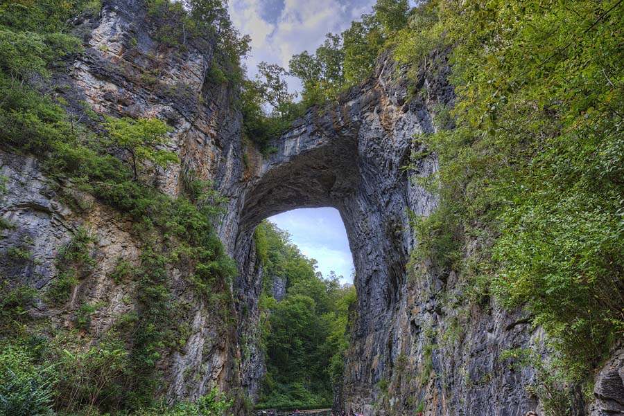

Natural Bridge, Virginia
Authored by Greg Campbell-Cohen for New Maps Plus.
This was created for Wild Eye Adventures.
About Natural Bridge
Natural Bridge is a geological formation in Rockbridge County, Virginia, comprising a 215-foot-high (66 m) natural arch with a span of 90 feet (27 m). It is situated within a gorge carved from the surrounding mountainous limestone terrain by Cedar Creek, a small tributary of the James River. Consisting of horizontal limestone strata, Natural Bridge is the remains of the roof of a cave or tunnel through which the Cedar Creek once flowed. Natural Bridge has been designated a Virginia Historic Landmark and a National Historic Landmark. Since 2016, the bridge and its surroundings have been managed by the Commonwealth of Virginia as Natural Bridge State Park. The musician David Berman, who lived intermittently in both Tennessee and Virginia, released an album titled 'The Natural Bridge' under the stage name Silver Jews. Fans speculate this geological formation is the inspiration for the album, available here.
Data source and method
Landform was extracted from the National File on Geographic Names Information System. Data was accessed at the USGS 3d Elevation Program.
The map is hosted on MapBox.
- See my projects on GitHub: Greg Campbell-Cohen
- Follow me on Twitter: @gcampbellcohen
- Find me on LinkedIn: LinkedIn